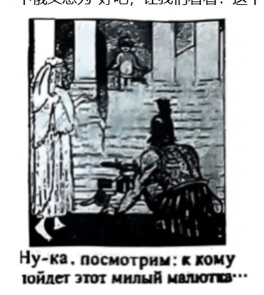
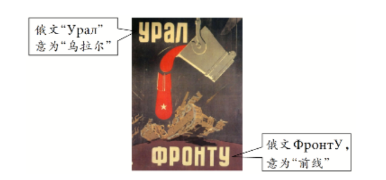
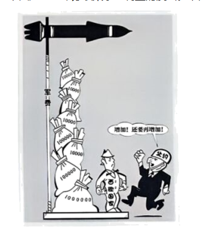
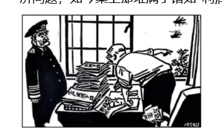
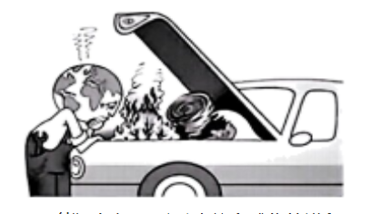

一、选择题
（2025·贵州·高考真题）
1.关于1907年海牙国际和平会议的裁军提案，英国代表指出，与军舰建造有关的既得利益集团庞大，且与制造业及各种贸易领域盘根错节，限制军备将遭到他们的激烈反对。德国代表认为，为了维护国家利益和威望，强大的海军必不可少。这反映当时（ ）
A．英德两国矛盾日益尖锐
B．贸易保护主义政策盛行
C．欧洲各国竞相扩军备战
D．和平呼声未受国际重视
答案：C
解析：材料中英国代表强调军备利益集团的强大阻力，德国代表坚持强大海军的必要性，两者均反映列强不愿限制军备、竞相扩军的实质。这正是20世纪初欧洲列强军备竞赛的体现，故选C。A项英德矛盾材料未直接体现；B项贸易保护主义与题意无关；D项"和平呼声未受国际重视"表述过于绝对且不符合材料主旨。
（2024·湖北·高考真题）
2.1913年，多米尼加对德国进出口占其对外贸易总额约20%，到1916年这两项数据均清零。1914—1917年，阿根廷三大农产品大麦、小麦和亚麻的出口量价齐跌。尽管战时需求挽救了巴西橡胶业，但其咖啡贸易在1914—1915年间下降了三分之一。1914—1918年，上海、大阪的现代纺织厂产量暴增。这些现象反映（ ）
A．世界市场因战争濒临崩溃
B．欧美国家侵略重心转移
C．第一次世界大战的全球性
D．单一产业结构弊端显现
答案：C
解析：题干涉及拉丁美洲（多米尼加、阿根廷、巴西）和亚洲（上海、大阪）等多个地区在一战期间的经济变动，既有贸易萎缩也有产量暴增，反映一战波及全球、影响各大洲经济，体现了一战的全球性。A项"濒临崩溃"过于夸大；B项材料未涉及侵略重心；D项单一产业弊端仅是局部现象，非材料主旨。
（2025·甘肃·高考真题）
3.1919年，奥地利首都维也纳出现了燃料短缺。有学者写道："维也纳的电灯忽明忽暗，电车停运，这都是因为原来从北方运来的煤炭现在大部分被一条新的国界挡住了。"这条"新国界"产生的直接原因是（ ）
A．德意志帝国建立
B．奥匈帝国解体
C．捷克斯洛伐克独立
D．波兰复国
答案：B
解析：一战结束后，奥匈帝国解体（1918年），捷克斯洛伐克、匈牙利等国相继独立，奥地利与北方产煤区之间出现新的国界。维也纳燃料短缺的直接原因是奥匈帝国解体后领土分割导致国界变化。C项捷克斯洛伐克独立是奥匈帝国解体的具体结果之一，但"直接原因"层面是奥匈帝国解体。故选B。
（2024·北京·高考真题）
4.马克思主义在俄国社会主义革命时期得到了丰富和发展。下列符合这一论断的是（ ）
A．"全世界无产者，联合起来"
B．"公社……所采取的各项具体措施，只能显示出走向属于人民、由人民掌权的政府的趋势"
C．"社会主义可能首先在少数甚至单独一个资本主义国家内获得胜利"
D．"重工业是发展社会主义经济一切部门、加强我们祖国的国防、增进人民福利的基础"
答案：C
解析：A项出自《共产党宣言》，是马克思恩格斯的原始论断；B项是马克思对巴黎公社的评价；D项是斯大林在苏联社会主义建设时期的论断，属于苏联建设时期而非俄国社会主义革命时期。C项是列宁根据俄国实际提出的"一国社会主义革命"理论，是对马克思主义的重大发展，符合"俄国社会主义革命时期"这一限定。故选C。
（2025·河南·高考真题）
5.下图是1917年1月俄国某杂志刊登的漫画《新婴孩，1917年》。画面中，左边是手持橄榄枝的和平天使，下边是身披铠甲的战神马尔斯。画面下俄文意为"好吧，让我们看看：这个可爱的宝宝会选什么……"这可以佐证（ ）

A．资产阶级临时政府在和战之间徘徊
B．两个政权并存的局面影响社会稳定
C．新生苏俄政权的和平呼吁深得人心
D．俄国民众对时局发展前景感到担忧
答案：D
解析：时间是1917年1月，此时二月革命尚未发生，既无临时政府也无两个政权并存，AB两项时间不符；苏俄政权建立于1917年11月，C项时间亦不符。漫画描绘1917年新年，和平与战争两种命运并存，寓意俄国民众面对前途未卜、忧虑不安，故选D。
（2024·浙江·高考真题）
6.1923年，张闻天的一篇译文提及，"（苏维埃共和国）不会做纯粹的社会主义，因为这种日子尚未到来；他也不会做纯粹的资本主义，因为这种日子已在衰败了。他是过去与未来的唯一的结合——资本主义与社会主义底原素（的元素）混合的同时存在。……而现在苏维埃共和国正在这种界限上。"文中的"混合"指向的是（ ）
A．战时共产主义政策
B．新经济政策
C．"社会主义工业化"
D．"新经济体制"
答案：B
解析：译文1923年发表，此时苏俄正推行新经济政策（1921—1928年）。新经济政策的核心就是"混合"——在国家掌握经济命脉前提下，允许私营资本主义经济存在，是社会主义与资本主义因素的结合。战时共产主义是纯粹的强制经济，社会主义工业化和新经济体制时间均不符。故选B。
（2025·广东·高考真题）
7.1928年，美国某工业建筑公司接到苏联价值4000万美元的拖拉机工厂建造订单。"后来，约有12个这样的工厂设计工作在底特律完成了，其余的工厂设计则准备在莫斯科的一个拥有1500名设计和制图员的特殊办公室去完成。"由此可知，当时苏联意在（ ）
A．引入外国资本发展私营企业
B．为国家的经济建设筹措资金
C．寻求美国援助以渡过危机
D．利用西方技术推进工业化
答案：D
解析：1928年苏联开始实施第一个五年计划，推进社会主义工业化。苏联从美国引进工厂建造和设计，目的是获取西方先进技术和管理经验，为工业化服务。A项私营企业与苏联工业化方向相悖；B项筹措资金不符合材料逻辑；C项1928年尚未爆发经济危机。故选D。
（2024·广东·高考真题）
8.1942年，围绕是否用非暴力方式保卫印度的问题，经过与尼赫鲁的多次争论，甘地表示不反对武装抵抗法西斯，支持尼赫鲁用武力保卫民族利益的立场。这（ ）
A．揭示了甘地宗教信条的转变
B．体现了国大党斗争的策略性
C．掀起了印度民族解放运动的高潮
D．促进了世界反法西斯同盟的形成
答案：B
解析：甘地一贯奉行非暴力原则，但在二战特殊背景下，他根据形势转而支持武装抵抗法西斯，并非宗教信条根本转变，A项错误；此时世界反法西斯同盟早于1942年1月已经形成，D项不符史实；C项掀起民族解放高潮不是此一事件的直接结果。甘地根据现实灵活调整策略，体现了国大党在民族解放斗争中的策略性。故选B。
（2025·全国卷·高考真题）
9.1920年奥夫雷贡任墨西哥总统后，开始推行土地改革。在其任期结束前，仅在624个村庄分配了300万公顷土地，多达3.2亿公顷土地仍被控制在大庄园主和教会等手里。奥夫雷贡的土地改革（ ）
A．未能触动原有的殖民统治
B．表明民主化道路曲折
C．否定了资产阶级革命成果
D．反映了奴隶制的盛行
答案：B
解析：墨西哥早于19世纪初独立，A项"殖民统治"不符事实；C项否定资产阶级革命成果无从体现；D项奴隶制说法不符合墨西哥实际。题干显示土地改革范围极为有限，绝大多数土地仍控制在旧势力手中，说明资产阶级民主改革推进艰难、道路曲折，故选B。
（2025·重庆·高考真题）
10.1925年，意大利政府下辖的法西斯工会职团联合会和意大利工业家联合会签订了"维多尼协议"，双方承认彼此是企业主和工人唯一的合法代表，工人和企业主的一切合同只能由上述两家联合会及其所辖组织签订。该协议旨在（ ）
A．改善工人经济待遇
B．加强国家对社会的控制力
C．促进劳资双方合作
D．保障工人组织工会的权利
答案：B
解析：法西斯工会由政府下辖，协议规定工人和企业主的一切合同只能通过法西斯控制的联合会签订，实质是将劳资关系全部纳入法西斯国家控制体系，排除独立工会，加强了国家对社会各阶层的控制。A、C、D均非其真实目的。故选B。
（2025·云南·高考真题）
11.19世纪60年代末，德国20至34岁的青壮年男性人口数量只略高于法国。1910年德法青壮年男性人口数量比例达到1.6:1，1939年已扩大到2:1。戴高乐曾感叹，每有一个法国男子达到兵役年龄，就有两个德国人如此。材料描述的状况（ ）
A．显示法国人口持续减少
B．促使法国放弃军备竞赛
C．加剧法国绥靖主义倾向
D．使法国加快与苏联结盟
答案：C
解析：材料说明德法兵源数量差距越来越大，法国军事潜力相对薄弱。面对这一不利局面，法国对抗德国的信心不足，更倾向于采取妥协退让的绥靖政策，以避免正面冲突。A项法国人口"持续减少"表述过于绝对；B项"放弃军备竞赛"不符史实；D项与苏联结盟虽有迹可循但不是主要影响。故选C。
（2025·河北·高考真题）
12.苏德战争爆发后，苏联所有的国防工厂都在集中全部技术力量研制新型武器。1941年7月，苏联设立科技委员会，负责国防研究中的新科技问题。当年，苏联就批量生产了多种新型坦克。这体现出，当时苏联（ ）
A．拥有强大的国家组织能力
B．实行战时共产主义政策
C．确立了工业化的发展方针
D．拉开了战略反攻的序幕
答案：A
解析：面对战争威胁，苏联迅速集中国防工厂技术力量、设立科技委员会，短期内批量生产新型坦克，说明苏联国家能够高效调配资源和组织生产，具有强大的国家组织动员能力。B项战时共产主义政策是一战后苏俄时期的政策；C项工业化方针确立于20世纪20年代；D项战略反攻序幕是1942—1943年斯大林格勒战役。故选A。
（2025·陕晋青宁卷·高考真题）
13.如图是1942年的一幅苏联宣传画，描绘的情景是：乌拉尔生产的钢铁被制造成炸弹，摧毁了前线的德军坦克。该宣传画反映出（ ）

A．敌后民众以钢铁般意志抵抗侵略
B．苏联为反法西斯战争付出了巨大牺牲
C．苏军进攻扭转了苏德战场的形势
D．工业化为争取卫国战争胜利创造条件
答案：D
解析：宣传画描绘乌拉尔工业区（苏联工业化建设的重要成果）生产的钢铁转化为前线武器击败德军，突出了工业化生产对战争胜利的支撑作用。1942年苏德战场尚处于防御阶段，C项"苏军进攻扭转"不符史实；A、B均非宣传画核心信息。故选D。
（2024·重庆·高考真题）
14.二战后日本部分影视通过描绘战争中的平民个体在东京大轰炸、广岛和长崎原子弹爆炸，以及太平洋战争中所遭受的创伤记忆，将日本民众构建成为"战争受害共同体"，参与塑造了日本社会新的"二战史观"。这种做法的目的是（ ）
A．抵制国内右翼势力
B．灌输军国主义思想
C．揭示历史复杂面向
D．开脱日本战争罪责
答案：D
解析：将日本民众塑造为"战争受害共同体"，刻意强调日本人民遭受的苦难，而非日本对亚洲各国的侵略罪行，其实质是模糊战争加害者与受害者的身份，转移国际社会对日本战争责任的追究，意在为日本的战争罪责开脱。故选D。
（2025·黑吉辽蒙卷·高考真题）
15.下图是1981年苏联某杂志刊登的漫画。对该漫画解读合理的是（ ）

A．北约内部存在分歧
B．欧盟陷入经济危机
C．华约军事力量衰落
D．美国调整外交战略
答案：A
解析：1981年正值冷战时期，苏联媒体刊登描绘北约成员国之间出现裂痕的漫画，意在表达并宣传北约内部矛盾与分歧。欧盟1993年才正式成立，B项时间不符；C、D均与漫画内容无直接关联。故选A。
（2025·湖南·高考真题）
16.20世纪50～60年代，加拿大为扩大粮食出口，主动与中国开展粮食贸易。美国试图利用加拿大对美石油供应的依赖加以阻挠。在加拿大政府的坚持下，1961年中加两国达成第一个小麦贸易协定。这（ ）
A．体现加拿大国际地位逐渐上升
B．表明北美区域经济集团化受阻
C．证明粮食贸易成为中美博弈重要工具
D．说明冷战格局下美加合作与对抗并存
答案：D
解析：冷战时期加拿大是美国的盟友（属北约体系），两国总体合作；但在对华粮食贸易上，加拿大坚持本国利益，顶住美国压力，与中国达成协议，说明在冷战格局下，美加之间存在合作也有利益博弈与对抗。A项国际地位提升材料未直接体现；B项北美经济集团化与本题无关；C项粮食贸易是工具而非中美博弈本身。故选D。
（2025·湖北·高考真题）
17.1945年5月8日德国战败投降，这一天被欧洲多国定为官方纪念日，但联邦德国态度暧昧，直至1985年才将其设为"解放日"，以纪念德国人"从纳粹暴力统治下鄙弃人性的制度中解放出来"和"德国历史之歧途的终结"。联邦德国的转变可归因于（ ）
①人口代际更替 ②社会历史意识转变 ③经济快速发展 ④美苏冷战走向缓和
答案：A
解析：1985年距二战结束已40年，亲历纳粹时代的一代人逐渐老去（人口代际更替①），新生代德国人对历史的反思更为深刻，社会历史意识发生了根本转变（②），使联邦德国得以直面历史。经济快速发展（③）与此转变无直接因果关系；1985年美苏冷战虽有缓和趋势，但这并非推动德国历史认知转变的关键因素（④）。故选A。
（2025·浙江·高考真题）
18.如图为创作于1958年的时事漫画，时任美国总统艾森豪威尔面露怒色指向窗外，斥责下属："谁让'春天'入境的？"此前他断言将在春季解决经济问题，如今桌上却堆满了诸如"利润下降""失业增加"的报告。漫画反映了（ ）

A．布雷顿森林体系瓦解
B．卡德纳斯改革的春风吹到美国
C．艾森豪威尔的经济政策未能奏效
D．古巴革命推翻美国扶植的傀儡政权
答案：C
解析：漫画直接呈现了艾森豪威尔承诺春季解决经济问题，但春天来临之时利润下降、失业增加，说明其经济政策未能达到预期效果。布雷顿森林体系瓦解于1971—1973年；卡德纳斯改革是1934—1940年墨西哥的事；古巴革命1959年发生。故选C。
（2025·河南·高考真题）
19.20世纪50年代初，美国面临复杂的国内外形势，时任总统艾森豪威尔认为，自由放任已寿终正寝，尝试将其复活的努力纯属愚蠢。联邦政府不能拒绝或逃避普罗大众强烈相信它应该承担的义务。由此可知，他当时最可能推行的措施是（ ）
A．逐渐放弃金本位制度
B．不断提高进口商品关税
C．扩大社会保险的范围
D．缩减联邦政府财政支出
答案：C
解析：艾森豪威尔明确反对自由放任，主张联邦政府承担对民众的义务，这与国家干预、福利国家建设的方向一致。二战后西方国家推行"福利国家"政策，扩大社会保险范围是其核心内容。A项金本位放弃于大萧条期间；B项提高关税是保护主义；D项缩减财政支出与扩大政府职能相矛盾。故选C。
（2025·广西·高考真题）
A．科技进步导致美富人收入的差距增大
B．"中间阶层"的扩大难以改变社会结构
C．"福利国家"无法解决贫富分化的问题
D．经济"滞胀"造成英美社会不平等加剧
答案：C
解析：图示显示二战后英美推行"福利国家"政策后，中间阶层有所扩大，但贫富差距依然存在甚至持续，说明福利国家政策能够缓和但无法从根本上解决贫富分化问题。A项因果关系材料不支持；B项"难以改变社会结构"过于绝对；D项"滞胀"是1970年代现象，且图示信息不只限于该时期。故选C。
（2025·江苏·高考真题）
21.20世纪50年代，美国出版的《兔子婚礼》讲述了白兔和黑兔相爱的童话故事。该书传递出"爱不分肤色"的理念，却在1958年遭到南方阿拉巴马州"白人公民委员会"的强烈抗议，被禁止发行。这说明美国（ ）
A．违背了尊重人权的原则
B．南方仍部分保留奴隶制
C．动物保护主义思想盛行
D．文学领域恪守陈旧观念
答案：A
解析：一本宣扬"爱不分肤色"的童话书遭到禁止，说明20世纪50年代美国南方种族歧视观念依然盛行，侵害了黑人等有色人种的平等权利，违背了尊重人权的原则。B项奴隶制早于1865年废除；C项动物保护主义与本题无关，题目考查的是种族歧视；D项"文学领域恪守陈旧观念"表述不准确，这是政治社会问题。故选A。
（2022·重庆·高考真题）
22.1972年，苏联重启西伯利亚地区的贝阿铁路建设项目以开发油田和铜矿资源，在全国征召志愿者（海报如图），并承诺参与铁路修建的志愿者将享有住房和汽车的优先分配权。材料表明，这一时期的苏联重视（ ）
A．优化分配制度改善人民生活
B．运用市场规律促进经济发展
C．引进西方技术开发远东地区
D．调动社会资源优先发展工业
答案：D
解析：苏联通过物质激励（住房、汽车优先分配权）征召全国志愿者参与铁路建设，目的是开发西伯利亚油田和矿产等工业资源，本质是调动社会人力资源服务于工业开发。A项改善人民生活是手段而非目的；B项运用市场规律不符合苏联计划经济性质；C项"引进西方技术"材料未涉及。故选D。
（2024·湖南·高考真题）
23.20世纪50年代，英国在镇压肯尼亚"茅茅运动"时，每屠杀一名起义者，得花一万英镑。法国为镇压印度支那人民独立斗争所支出的战费高达三万亿旧法郎，差不多等于马歇尔计划拨款的两倍。这两则史实（ ）
A．揭示了民族解放运动的历史背景
B．有助于解释殖民统治崩溃的原因
C．有助于衡量英法两国当时的经济实力
D．揭示了亚非拉反殖反帝斗争的正义性
答案：B
解析：材料揭示殖民宗主国镇压民族独立运动所付出的巨大经济代价，说明维持殖民统治成本越来越高、不可持续，这有助于解释二战后殖民体系为何会走向崩溃。A项"揭示背景"不是材料主旨；C项衡量经济实力角度错误；D项正义性无法从经费数字得出。故选B。
（2025·四川·高考真题）
24.20世纪60年代后，非洲新兴独立国家多进行自主建筑实践。1961年，加纳独立后建成黑星广场纪念碑，1965年刚果（金）融合本土雕刻艺术建造国民议会大厦，1967年塞内加尔建成戈雷岛纪念馆。据此推知，这些建筑实践（ ）
A．推动了亚非民族的解放
B．促进了科技水平提高
C．有利于民族国家的构建
D．冲击了美苏两极格局
答案：C
解析：非洲新兴独立国家通过建造具有民族特色的纪念碑、议会大厦和纪念馆，彰显民族独立精神、塑造国家形象和民族认同感，有利于新生民族国家的构建和凝聚。A项这些建筑完成于独立后；B、D项与建筑实践无直接关联。故选C。
（2025·江西·高考真题）
25.截至1974年，新加坡政府通过联合持股和进入董事会的形式，直接或间接参与了124家公司，其中包括钢铁、造船、航运等关键工业，它还为私人投资者不太敢贸然进入的领域提供"种子"资本。这表明新加坡政府（ ）
A．重视国家干预作用
B．扶植个体经济发展
C．强调利用国际资本
D．推行福利国家建设
答案：A
解析：政府直接或间接参与124家公司，掌握关键工业领域，并为私人不敢进入的领域提供"种子资本"，典型体现了国家干预经济、主导工业发展的模式。这是新加坡政府主导型经济发展模式的特点。B、C、D均未在材料中体现。故选A。
（2025·安徽·高考真题）
26.1990年，美国主动并首次与欧共体就建立全面合作关系问题达成《欧共体——美国关系宣言》，确立了6项协商与对话机制，并规定双方在一切国际组织中尽可能协调立场，只要有一方提出要求，即应进行协商。这表明（ ）
A．两极格局崩溃推动欧美合作
B．资本主义世界经济体系已形成
C．世界多极化趋势越来越明显
D．欧美协调促成欧洲经济一体化
答案：C
解析：1990年欧共体已发展成重要的国际力量，美国主动与其建立全面合作关系并协调立场，体现了欧共体作为独立力量与美国并驾齐驱，世界多极化趋势日益明显。A项两极格局1991年才正式崩溃；B项资本主义世界经济体系早于此已形成；D项因果关系倒置，欧洲经济一体化在前。故选C。
（2025·浙江·高考真题）
27.1930年，美国国会通过新的关税法案，大幅度提高关税，引发贸易战，由此加剧了世界经济大萧条。二战结束以来，为汲取历史教训，国际社会相继建立了国际货币基金组织、关贸总协定、二十国集团等机构、机制，通过加强国际协调与合作、降低关税、建立多边贸易体制，促进世界贸易发展。材料说明（ ）
A．多边主义和开放包容是维护世界经济秩序的正道
B．逆全球化是世界贫富差距不断扩大的必然产物
C．贸易战是引发世界经济大萧条的根本原因
D．设置关税壁垒彻底改变世界经济格局
答案：A
解析：材料以1930年贸易战加剧大萧条为反面教训，以二战后建立多边贸易体制为正面经验，共同说明多边主义和开放包容对维护世界经济秩序的重要性，故选A。B项逆全球化表述不符合材料逻辑；C项"根本原因"过于绝对，大萧条根本原因是生产关系与生产力的矛盾；D项"彻底改变"说法绝对化。
（2025·浙江·高考真题）
28.社会信息化促进了世界各国间的相互依存、相互影响。然而，下图漫画中的美国却"满面笑容"地堆砌"数字壁垒"，使得其他国家应用程序（APP）的进入变得更加困难。该漫画旨在反映（ ）
A．社会信息化使信息安全的保护日益困难
B．美国试图阻碍数字信息的正常流通
C．人机关系面临前所未有的挑战
D．美国热衷于创造数字壁垒纪录
答案：B
解析：漫画描绘美国积极构建"数字壁垒"限制外国APP进入，其核心指向是美国利用技术手段阻碍他国数字信息产品在其市场的正常流通，实质是数字领域的贸易保护主义。A项信息安全保护是借口而非漫画主旨；C、D均与漫画内容无关。故选B。
（2025·天津·高考真题）
29.20世纪30年代，国内生产总值（GDP）成为衡量国家实力的主要指标；20世纪后期，国际社会越来越关注人的生活条件和生活质量的改善，在GDP之外，联合国等国际组织提出"人类发展指标""可持续发展指标"等。这一变化表明（ ）
A．时代潮流的转换
B．区域一体化的形成
C．经济增长的加速
D．多极化趋势的发展
答案：A
解析：从以GDP衡量实力，到关注人的生活质量与可持续发展，反映了国际社会发展理念的重大转变，即从单纯追求经济增长转向关注人的全面发展和可持续发展，体现了时代潮流和发展观念的转换。B、C、D均与材料主旨无直接关联。故选A。
（2025·浙江·高考真题）
30.下图所示漫画，"地球修理工"满脸忧愁地看着引擎盖下面频发的"山火、飓风和海啸"而无从下手，该漫画意在说明（ ）

A．能源危机严重影响着全球化的进程
B．国际社会消极应对非传统安全威胁
C．交通安全成为城市化进程中的普遍问题
D．生态环境恶化威胁着人类的生存和发展
答案：D
解析：漫画以"地球修理工"的视角，呈现地球内部频发山火、飓风、海啸等自然灾害，暗喻生态环境恶化带来的严峻威胁，且修理工"无从下手"说明问题的严重性，意在警示生态环境恶化对人类生存发展的威胁。A、C与漫画场景无关；B项"消极应对"是表象描述，非漫画核心意旨。故选D。
二、非选择题
（2025·全国卷·高考真题）
31. 阅读材料，完成下列要求。
材料一 1954年，日内瓦会议期间，中国认为老挝问题事关东南亚和平，必须推动老挝和平早日实现。中国代表团经过卓越的外交斡旋，终于促使日内瓦会议达成恢复印度支那和平的协议，法国从老挝等国撤军，确认他们的民族独立地位。中国承认老挝王国政府是代表老挝的合法政府，希望王国政府对外走中立化道路，不能允许美国在其领土上建立军事基地。1956年8月，周恩来提出，中国愿意帮助老挝建设和提供无偿援助，且不附带任何政治条件。1957年11月，老挝民族联合政府在万象成立。
材料二 根据1954年日内瓦协议，独立后的老挝应坚持中立政策。美国担心以共产党人为主的巴特寮赢得普选胜利，阻挠在老挝履行日内瓦协议，导致其内乱不断。1956年初，美国帮助老挝王国政府扩充军队，与巴特寮抗衡，阻止建立联合政府。肯尼迪上台时，巴特寮等进步力量接连取得胜利。由于老挝并非美国战略重点，美国军方也反对在亚洲再次卷入战争，肯尼迪政府决定寻求政治解决老挝问题的途径。1962年7月，第二次日内瓦会议确认维持老挝中立。美国从老挝撤出军事顾问，认可其中立主义原则。
（1）根据材料一并结合所学知识，概括20世纪50年代中国对老挝的政策及其影响。
（2）根据材料二并结合所学知识，概括20世纪五六十年代美国对老挝政策的变化并说明原因。
（3）根据材料并结合所学知识，说明负责任大国在维护第三世界国家利益方面如何发挥作用。
【参考答案】
（1）政策及影响：
政策：①支持老挝民族独立，推动老挝实现和平；②承认老挝王国政府的合法性，主张老挝走中立化道路；③提供无偿经济援助，不附带政治条件；④开展积极外交斡旋，推动日内瓦协议达成。
影响：①推动了印度支那和平协议的达成，有助于东南亚地区和平稳定；②促进了老挝民族联合政府的建立，维护了老挝民族独立；③体现并践行了和平共处五项原则，提升了中国的国际形象；④有助于打破美国的外交封锁，扩大了新中国的国际影响力。
（2）政策变化及原因：
变化：由干涉老挝内政、阻挠执行日内瓦协议、支持亲美势力，转变为承认老挝中立、撤出军事顾问，接受老挝中立化。
原因：①老挝并非美国全球战略的核心，军事介入代价过高；②朝鲜战争的教训使美国军方不愿再次卷入亚洲战争；③老挝进步力量（巴特寮）持续壮大，单纯军事干涉难以奏效；④肯尼迪政府调整对外政策，倾向以政治手段处理地区冲突；⑤国际社会要求尊重弱小国家主权和中立地位的压力。
（3）负责任大国的作用：
①积极参与国际多边外交，通过协商谈判推动地区争端的和平解决；②尊重第三世界国家主权与独立，不以大国利益凌驾于小国之上；③提供不附带政治条件的经济援助，支持发展中国家自主发展；④坚持多边主义，遵守并维护国际法与国际准则；⑤在大国博弈中为弱小国家提供外交支持，维护国际公平正义。
（2025·广西·高考真题）
32. 阅读材料，回答问题。
材料 由于空间显得收缩成了远程通信的一个"地球村"，成了经济上和生态上相互依赖的一个"宇宙飞船地球"，由于时间范围缩短到了现存就是全部存在的地步，所以我们必须学会如何对付我们的空间和时间世界"压缩"的一种势不可挡的感受。对时空压缩的体验是挑战性的、令人兴奋的、紧张的、有时是令人深深忧虑的，因此能引起多种多样的社会的、文化的和政治的反响。
——改编自戴维·哈维《后现代的状况》
根据材料并结合20世纪以来的世界历史进程，围绕"时空压缩的反响"，自行拟定一个具体的论题，并就所拟论题进行阐述。（要求：明确写出所拟论题，阐述须有史实依据。）
【参考答案示例】
论题示例一：时空压缩加速了经济全球化的进程，同时也加剧了国际竞争与利益冲突。
阐述：20世纪以来，交通与通信技术的革命性突破（蒸汽机、内燃机、航空、互联网等）极大压缩了时空距离，促进了商品、资本、信息和人员的全球快速流动，推动经济全球化不断深化。二战后，布雷顿森林体系、关贸总协定、世界贸易组织等国际经济制度的建立，进一步扩大了国际贸易与投资，全球价值链深度整合，各国经济相互依存程度前所未有。然而，时空压缩同样带来竞争摩擦：发达国家与发展中国家之间的贫富差距拉大，20世纪90年代以来逆全球化思潮兴起，贸易保护主义抬头（如2018年中美贸易摩擦），折射出时空压缩背景下国家利益冲突的加剧。
综上，时空压缩是一把双刃剑：它为全球发展提供了前所未有的机遇，也带来了新的矛盾与挑战，如何构建公平合理的国际经济秩序，实现共同发展，是当代国际社会的重要课题。
论题示例二：时空压缩推动了民族独立运动的兴起与民族意识的觉醒。
阐述：20世纪以来，交通与通信技术的发展使殖民地半殖民地人民能够更快获取外部世界的信息，了解民主、民族自决等先进思想。一战与二战期间，亚非拉各地民众随着信息传播速度加快，对列强殖民统治的认知和抵抗意识迅速增强。印度甘地领导的非暴力不合作运动、中国五四运动、非洲茅茅运动等，均借助现代传播手段凝聚民心、扩大影响。二战后，民族独立运动在全球范围内迅速扩展，仅1960年就有17个非洲国家独立（"非洲独立年"），时空压缩使民族解放运动在全球范围内相互激励和呼应。
综上，时空压缩打破了殖民地的信息封锁，加速了民族意识的觉醒，推动了20世纪民族独立运动的高涨，深刻改变了世界政治格局。